User Guide of our Shiny Application
In this document, we will be providing a guide on how to use our application HealthGeo Cambodia.
We have the following pages on our application that we will be explaining one by one here:
- Home Page
- Exploratory Data Analysis - Health Facilities
- Exploratory Data Analysis - Population
- Network-Constrained Kernel Density Estimation
- Spatial Autocorrelation
- Data
1. Home Page
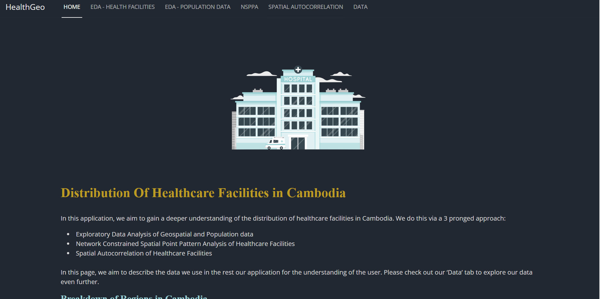
This page is a static page that provides users an overview of the problem statement that is being analysed and the data that is being used in this application. This acts as a primer for users’ understanding of the context so that they can better glean insights from the subsequent analytic tools provided in this application.
2. Exploratory Data Analysis - Health Facilities
You can navigate to this page by clicking the ” EDA - Health Facilities ” tab. This page has a tabset with two tabs. The first tab is an introduction tab. This tab tells you about the features offered in this page.
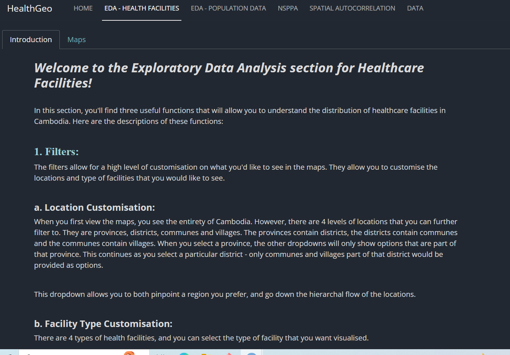
The next tab called “Maps” has a tabset of its own, where you can view either the Spatial Points map or the Choropleth map. There is a sidebar with filters to better filter out what you’d like to see on the map.
2.1 Spatial Points map
This is how the page looks like when the user tries to view the Spatial Points map:
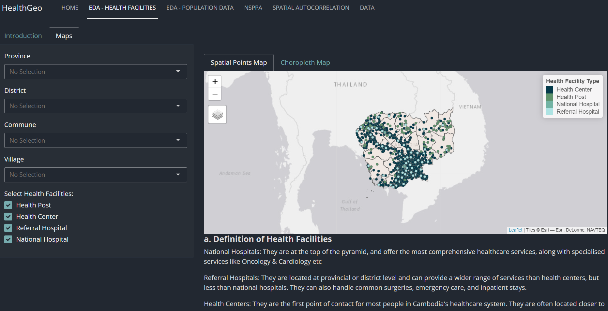
By default, the Spatial Points map will show the distribution of all 4 health facilities type all over Cambodia as dots. To change what you’d like to see on the map, you would have to modify the inputs present in the sidebar.
The map is interactive, hence, the user can zoom in or out and click on the regions or the dots representing the facilities to get more details.
2.1 Choropleth map
This choropleth map visualises the difference in the number of health facilities between the regions that are investigated. The spatial points map, however, visualises the individual discrete points whilst the choropleth map visualises the number of facilities in totality.
This is how the choropleth map can look like:
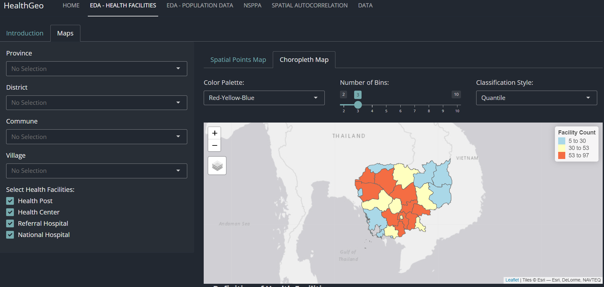
The map is interactive, hence, the user can zoom in or out and click on the regions or the dots representing the facilities to get more details.
By default, the user views the entirety of cambodia.
In addition to the options present in the sidebar, we also have a couple other options that users can leverage to customize the map they are viewing.
They can choose the color palate that is the most aesthetically pleasing and utilitarian for them. They can choose the type of data categorisation they prefer, and the number of the data categories they would want from 2 to 10.
Data categorization options:
Quantile: Divides data into groups with equal numbers of points.
Jenks (Natural Breaks): Groups data by minimizing variance within and maximizing variance between groups.
Equal Interval: Splits data into groups with equal value ranges.
Pretty: Automatically determines ‘nice’ breakpoints in data to create understandable groups.
Standard Deviation: Groups data based on how far away points are from the mean, using standard deviation units.
K-means: Separates data into a specified number of clusters based on similarity
Color Palette Options:
Red-Yellow-Blue
- 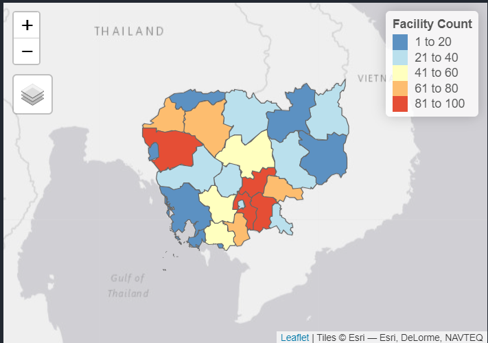
Blue-Green
- 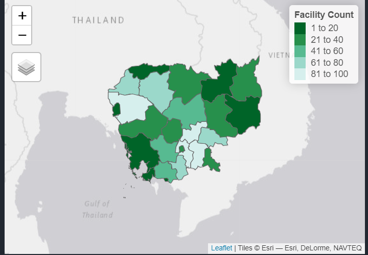
Red-Grey
- 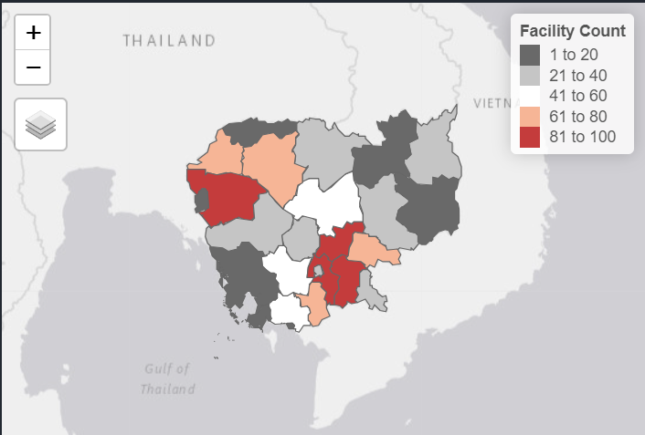
Purple-Orange
- 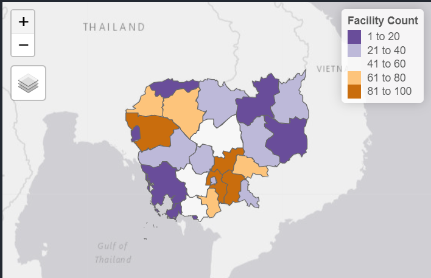
Spectral
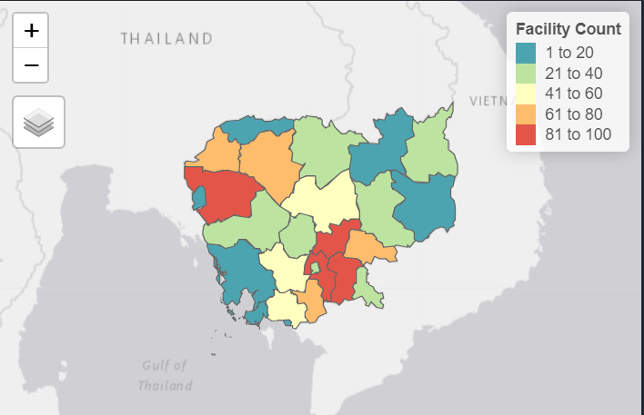
3. Exploratory Data Analysis - Population
In this section, we will be visualising the differences in population indicators between provinces in Cambodia.
This page has a tabset with two tabs, the first is the introduction explaining what this EDA is about.
3.1 Introduction
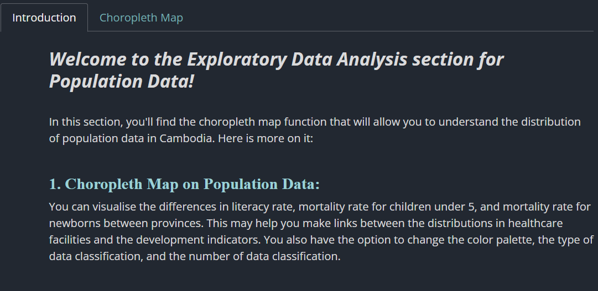
3.2 Choropleth map
The second tab in this page is the choropleth map itself:
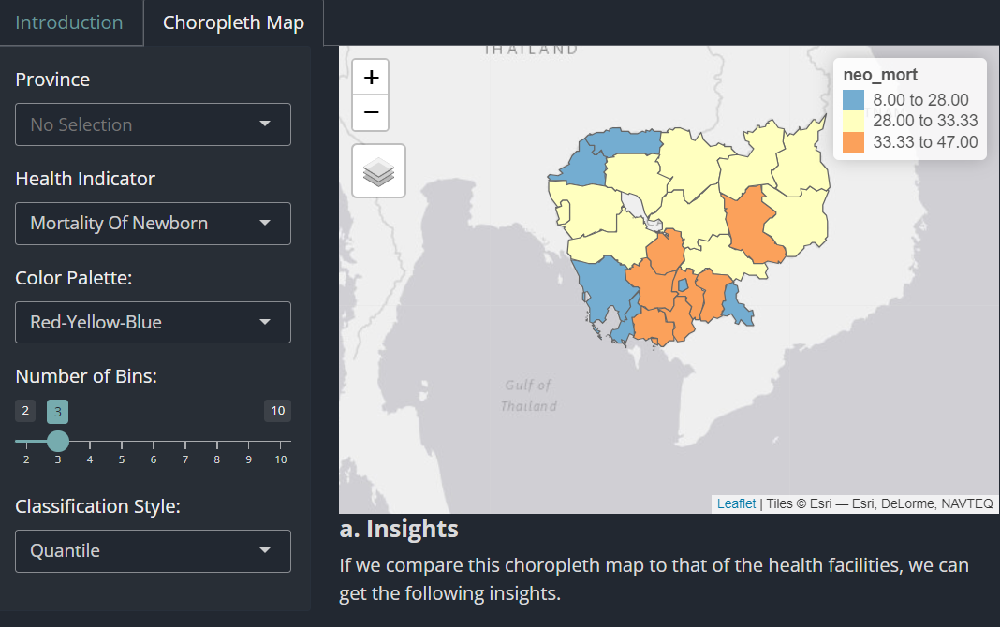
The map is interactive, hence, the user can zoom in or out and click on the regions or the dots representing the facilities to get more details.
This choropleth map visualizes the differences in population indicators between provinces. These indicators include mortality rate of newborns, mortality rates of children under 5, and literacy rates.
5. Data
This page allows the user to better understand the data that was used for this application. There is a tabset with three tabs where each represents the three key sets of data that were used. Each tab allows you to view the data in the form of a table, like so:
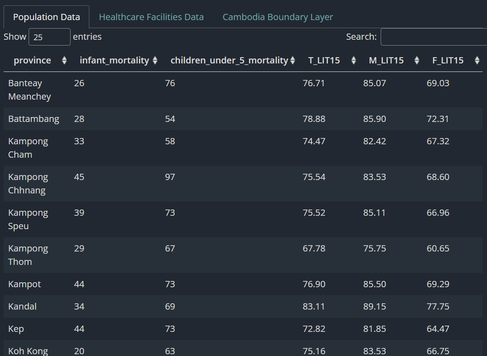
You could sort each of the columns ascendingly and descendingly, and also search for particular entries.